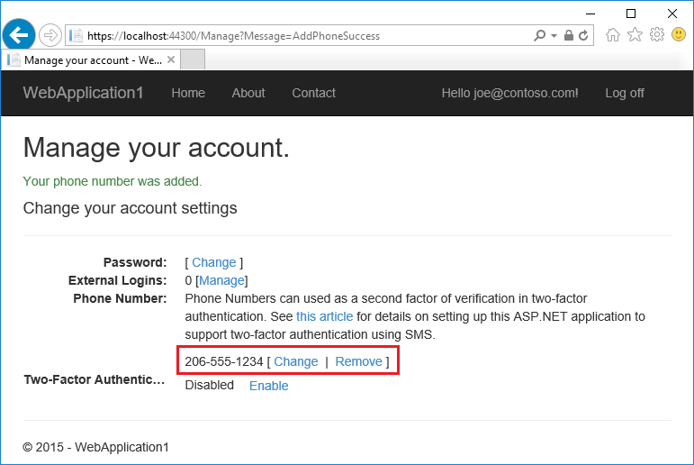
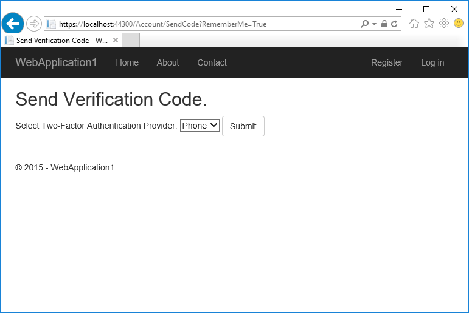

Two-factor authentication with SMS
By Rick Anderson and Swiss-Devs
This tutorial applies to ASP.NET Core 1.x only. See Enabling QR Code generation for authenticator apps in ASP.NET Core for ASP.NET Core 2.0 and later.
This tutorial shows how to set up two-factor authentication (2FA) using SMS. Instructions are given for twilio and ASPSMS, but you can use any other SMS provider. We recommend you complete Account Confirmation and Password Recovery before starting this tutorial.
View the completed sample. How to download.
Create a new ASP.NET Core project
Create a new ASP.NET Core web app named Web2FA with individual user accounts. Follow the instructions in Enforcing SSL in an ASP.NET Core app to set up and require SSL.
Create an SMS account
Create an SMS account, for example, from twilio or ASPSMS. Record the authentication credentials (for twilio: accountSid and authToken, for ASPSMS: Userkey and Password).
Figuring out SMS Provider credentials
Twilio:
From the Dashboard tab of your Twilio account, copy the Account SID and Auth token.
ASPSMS:
From your account settings, navigate to Userkey and copy it together with your Password.
We will later store these values in with the secret-manager tool within the keys SMSAccountIdentification and SMSAccountPassword.
Specifying SenderID / Originator
Twilio:
From the Numbers tab, copy your Twilio phone number.
ASPSMS:
Within the Unlock Originators Menu, unlock one or more Originators or choose an alphanumeric Originator (Not supported by all networks).
We will later store this value with the secret-manager tool within the key SMSAccountFrom.
Provide credentials for the SMS service
We'll use the Options pattern to access the user account and key settings.
- Create a class to fetch the secure SMS key. For this sample, the
SMSoptionsclass is created in the Services/SMSoptions.cs file.
namespace Web2FA.Services
{
public class SMSoptions
{
public string SMSAccountIdentification { get; set; }
public string SMSAccountPassword { get; set; }
public string SMSAccountFrom { get; set; }
}
}
Set the SMSAccountIdentification, SMSAccountPassword and SMSAccountFrom with the secret-manager tool. For example:
C:/Web2FA/src/WebApp1>dotnet user-secrets set SMSAccountIdentification 12345
info: Successfully saved SMSAccountIdentification = 12345 to the secret store.
- Add the NuGet package for the SMS provider. From the Package Manager Console (PMC) run:
Twilio:Install-Package Twilio
ASPSMS:Install-Package ASPSMS
- Add code in the Services/MessageServices.cs file to enable SMS. Use either the Twilio or the ASPSMS section:
Twilio:
using Microsoft.Extensions.Options;
using System.Threading.Tasks;
using Twilio;
using Twilio.Rest.Api.V2010.Account;
using Twilio.Types;
namespace Web2FA.Services
{
// This class is used by the application to send Email and SMS
// when you turn on two-factor authentication in ASP.NET Identity.
// For more details see this link https://go.microsoft.com/fwlink/?LinkID=532713
public class AuthMessageSender : IEmailSender, ISmsSender
{
public AuthMessageSender(IOptions<SMSoptions> optionsAccessor)
{
Options = optionsAccessor.Value;
}
public SMSoptions Options { get; } // set only via Secret Manager
public Task SendEmailAsync(string email, string subject, string message)
{
// Plug in your email service here to send an email.
return Task.FromResult(0);
}
public Task SendSmsAsync(string number, string message)
{
// Plug in your SMS service here to send a text message.
// Your Account SID from twilio.com/console
var accountSid = Options.SMSAccountIdentification;
// Your Auth Token from twilio.com/console
var authToken = Options.SMSAccountPassword;
var
TwilioClient.Init(accountSid, authToken);
var msg = MessageResource.Create(
to: new PhoneNumber(number),
from: new PhoneNumber(Options.SMSAccountFrom),
body: message);
return Task.FromResult(0);
}
}
}
ASPSMS:
using Microsoft.Extensions.Options;
using System.Threading.Tasks;
namespace Web2FA.Services
{
// This class is used by the application to send Email and SMS
// when you turn on two-factor authentication in ASP.NET Identity.
// For more details see this link https://go.microsoft.com/fwlink/?LinkID=532713
public class AuthMessageSender : IEmailSender, ISmsSender
{
public AuthMessageSender(IOptions<SMSoptions> optionsAccessor)
{
Options = optionsAccessor.Value;
}
public SMSoptions Options { get; } // set only via Secret Manager
public Task SendEmailAsync(string email, string subject, string message)
{
// Plug in your email service here to send an email.
return Task.FromResult(0);
}
public Task SendSmsAsync(string number, string message)
{
ASPSMS.SMS SMSSender = new ASPSMS.SMS();
SMSSender.Userkey = Options.SMSAccountIdentification;
SMSSender.Password = Options.SMSAccountPassword;
SMSSender.Originator = Options.SMSAccountFrom;
SMSSender.AddRecipient(number);
SMSSender.MessageData = message;
SMSSender.SendTextSMS();
return Task.FromResult(0);
}
}
}
Configure startup to use SMSoptions
Add SMSoptions to the service container in the ConfigureServices method in the Startup.cs:
// Add application services.
services.AddTransient<IEmailSender, AuthMessageSender>();
services.AddTransient<ISmsSender, AuthMessageSender>();
services.Configure<SMSoptions>(Configuration);
}
Enable two-factor authentication
Open the Views/Manage/Index.cshtml Razor view file and remove the comment characters (so no markup is commnted out).
Log in with two-factor authentication
- Run the app and register a new user

- Tap on your user name, which activates the
Indexaction method in Manage controller. Then tap the phone number Add link.

- Add a phone number that will receive the verification code, and tap Send verification code.

- You will get a text message with the verification code. Enter it and tap Submit

If you don't get a text message, see twilio log page.
- The Manage view shows your phone number was added successfully.

- Tap Enable to enable two-factor authentication.

Test two-factor authentication
Log off.
Log in.
The user account has enabled two-factor authentication, so you have to provide the second factor of authentication . In this tutorial you have enabled phone verification. The built in templates also allow you to set up email as the second factor. You can set up additional second factors for authentication such as QR codes. Tap Submit.

Enter the code you get in the SMS message.
Clicking on the Remember this browser check box will exempt you from needing to use 2FA to log on when using the same device and browser. Enabling 2FA and clicking on Remember this browser will provide you with strong 2FA protection from malicious users trying to access your account, as long as they don't have access to your device. You can do this on any private device you regularly use. By setting Remember this browser, you get the added security of 2FA from devices you don't regularly use, and you get the convenience on not having to go through 2FA on your own devices.

Account lockout for protecting against brute force attacks
We recommend you use account lockout with 2FA. Once a user logs in (through a local account or social account), each failed attempt at 2FA is stored, and if the maximum attempts (default is 5) is reached, the user is locked out for five minutes (you can set the lock out time with DefaultAccountLockoutTimeSpan). The following configures Account to be locked out for 10 minutes after 10 failed attempts.
public void ConfigureServices(IServiceCollection services)
{
// Add framework services.
services.AddDbContext<ApplicationDbContext>(options =>
options.UseSqlServer(Configuration.GetConnectionString("DefaultConnection")));
services.AddIdentity<ApplicationUser, IdentityRole>()
.AddEntityFrameworkStores<ApplicationDbContext>()
.AddDefaultTokenProviders();
services.AddMvc();
services.Configure<IdentityOptions>(options =>
{
options.Lockout.DefaultLockoutTimeSpan = TimeSpan.FromMinutes(10);
options.Lockout.MaxFailedAccessAttempts = 10;
});
// Add application services.
services.AddTransient<IEmailSender, AuthMessageSender>();
services.AddTransient<ISmsSender, AuthMessageSender>();
services.Configure<SMSoptions>(Configuration);
}